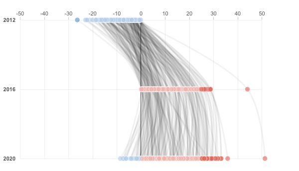

<%= await t.include("lib/_head.html") %>
<%   var states = "Arizona" %>

<% if (COPY.labels[states + "_headline"]) { %>
<h1><%= t.smarty(COPY.labels[states + "_headline"]) %></h1>
<% } %>

<% if (COPY.labels[states + "_subhed"]) { %>
<h2><%= t.smarty(COPY.labels[states + "_subhed"]) %></h2>
<% } %>

<div id="total-vote" class="state-total-wrapper"></div>

<div id="legend" class="legend-wrapper">
  <div class="line-wrapper item">
    <div class="line-title">County</div>
    <div class="line"></div>
  </div>
  <div class="circle-wrapper item">
    <div class="circle-title">Total votes in county</div>
    <div class="circles-wrapper">
      <div class="circle-item">
        <div class="circle-1 circle"></div>
        <div class="circle-label">100K</div>
      </div>
      <div class="circle-item">
        <div class="circle-2 circle"></div>
        <div class="circle-label">500K</div>
      </div>
      <div class="circle-item">
        <div class="circle-3 circle"></div>
        <div class="circle-label">1.5M</div>
      </div>
    </div>
  </div>
</div>

<div id="line-chart" class="graphic" role="img"
<% if (COPY.labels.screenreader) { %>
  aria-label="<%- COPY.labels.screenreader %>"
<% } %>
>

  <div id="urban" class="graphic-wrapper urban-wrap"></div>
  <div id="rural" class="graphic-wrapper rural-wrap"></div>
  <div id="suburban" class="graphic-wrapper suburban-wrap"></div>

  <!--  -->
</div>

<% if (COPY.labels.footnote) { %>
<div class="footnotes">
  <h4>Notes</h4>
  <p><%= COPY.labels.footnote %></p>
</div>
<% } %>

<div class="footer">
  <% if (COPY.labels.source) { %><p>Source: <%= COPY.labels.source %></p><% } %>
  <% if (COPY.labels.credit) { %><p>Credit: <%= COPY.labels.credit %></p><% } %>
</div>

<script type="text/javascript">
  var DATA = <%= JSON.stringify(COPY.reformatted_data.filter(d => states.includes(d.state))) %>;
  // var DATA =  <%= JSON.stringify(COPY.az_votemargins) %>;
  // var VOTES = <%= JSON.stringify(COPY.az_votect) %>;
</script>

<script src="./single.js"></script>

<%= await t.include("lib/_foot.html") %>
